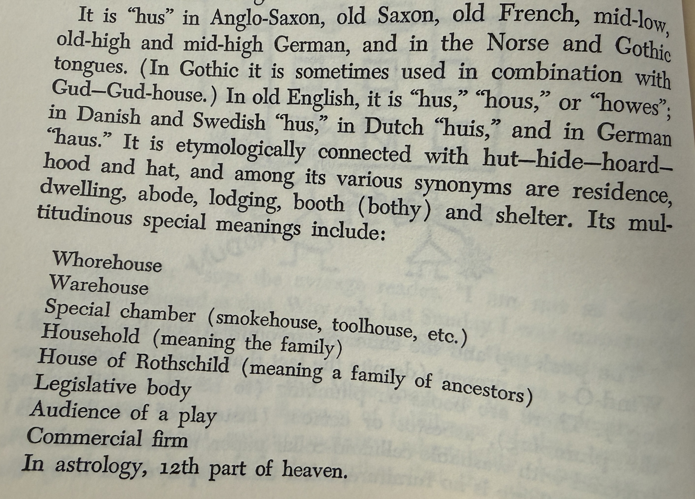

Nine Chains · Vignette 11
The House Inside
the Word
A reading conversation between Buckminster Fuller, Alfredo Mathew, and AI—on etymology, shelter, and the many worlds gathered beneath one word.

Alfredo
Interpretation
Etymology again. This is fun. Haus, house, Haus, Haus: hut, hide, horde, hood, hat. Residence, dwelling, abode. It is all shelter.
Whorehouse. Warehouse. Smokehouse. Household. The House of Rothschild. A legislative body. In astrology, the twelfth part of heaven—something I am not familiar with.
I thought it was remarkable to see one concept, shelter, manifested across so many different worlds: from a political body to a lodging to your ancestors. A house can contain people, goods, power, lineage, work, desire, or a portion of the sky.
Of course, all of Fuller’s references here are European. I suspect that nearly everything in this book will come through the Western tradition. He does not really step outside it.
That limitation belongs with everything else: the theory of relativity. Everything is relative to a point of view. Buckminster Fuller is a European white man, so it makes sense that this is the linguistic and cultural house from which he sees.
AI
Synthesis
Fuller treats language as an archaeological site. Beneath the modern word he searches for an originating human need: enclosure, belonging, protection. The semantic house expands until it contains family, commerce, government, dynasty, and cosmos.
But words do not grow from a single seed into perfectly ordered branches. Some of Fuller’s associations are poetic wordplay rather than accepted linguistic descent. That does not make the exercise empty; it changes its character. He is mapping conceptual resonance—what the sounds and meanings allow him to see—rather than establishing a strict family tree.
Alfredo’s attention to Fuller’s Western viewpoint adds the necessary second archaeology. Every account of “the house” is spoken from inside a house of language and history. A supposedly universal system may simply have made its own walls invisible.
Relativity here is cultural as well as physical. Perspective does not mean that every interpretation is equally complete. It means no observer can claim a view from nowhere. Comprehensive thought begins not by escaping one’s location, but by naming it—and opening doors through which other worlds can enter.
Every word is a dwelling.
Its meanings reveal what a culture has sheltered—and what it has left outside.